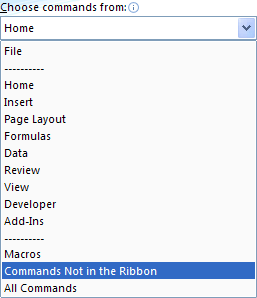

Free
computer Tutorials
|
Free
computer Tutorials
|
|
 HOME HOME
|
|
||||
Microsoft Excel 2007 to 2010Data Forms in ExcelIf your spreadsheet is too big to manage, and you constantly have to scroll back and forward just to enter data, then a Data Form could make your life easier. To see what a Data Form is, we'll construct a simple spreadsheet.
But a data form is just a way to quickly enter data into a cell. It is used when the spreadsheet is too big for the screen. To get a clearer idea of what a data form is, try this.
In the version of Excel 2007 we have, Data Forms have been hidden. They used to be sitting on the Data menu. Now they are not. In fact, quite a few menu options have disappeared in Excel 2007 and Excel 2010.
To find Data Forms, click on the Office button in the top left of Excel, for 2007 users. From the Office button menu, click on Excel Options: For Excel 2010 users, click the File tab in the top left. From the File menu, click Options. When you click the Excel Options button, you'll see this dialogue box
popping up: Click the Customization item on the left in Excel 2007. In Excel 2010 there is a Quick Access Toolbar item. Click that instead of Customization. The idea is that you can place any items you like on the Quick Access toolbar at the top of Excel. You pick one from the list, and then click the Add button in the middle. To add the Data Form option to the Quick Access Toolbar, click the
drop down list where it says Choose Commands From. You should
see this (we've chopped a few options off, in the image below):  Click on Commands Not in the Ribbon. The list box will change:
From the Commands Not in the Ribbon list, select Form. Now click the Add button in the Middle. The list box on the right will then look something like this one: Explore the other items you can add to the Quick Access Toolbar. You might find your favourite in there somewhere! When you click OK on the Excel Options dialogue box, you'll be returned to Excel. Look at the Quick Access toolbar, and you should see your new item: Back to the spreadsheet. Type any number you like in cell A2, under January. Then type a number in cell B2 for February. Now highlight the columns A to L again. This is so that Excel will know which is a column heading and which is the data. Click the Form item you have just added to the Quick Access toolbar: You should then see this: 
All the Columns in the spreadsheet are now showing. Enter numbers for the other months. To start a new row in your spreadsheet, you just click the New button on the right.
In the next part, you'll see how to add drop down lists to an Excel spreadsheet. |
|||||
|